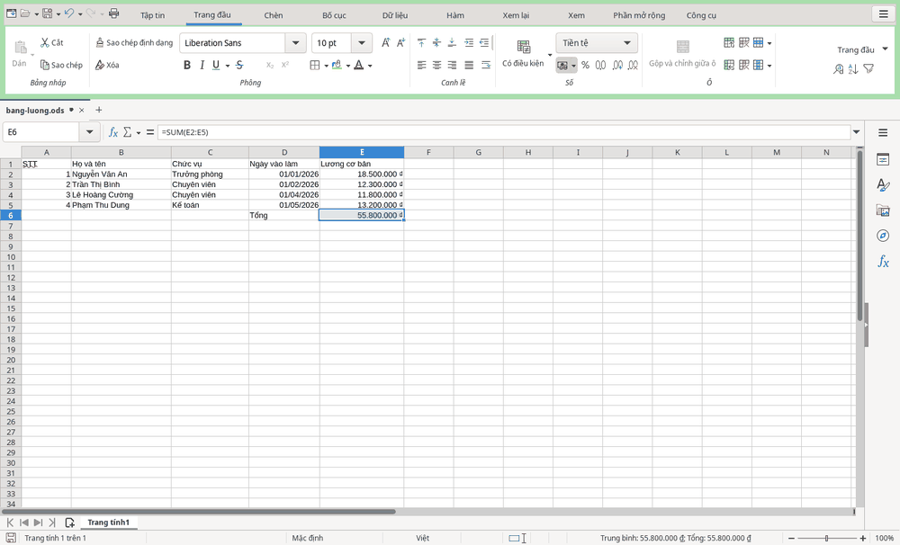

Bảng tính
Bảng tính: làm quen
HST Sheets giúp bạn tính toán, lập bảng lương và thống kê. Một tệp bảng tính có thể có nhiều trang tính.
Nhận biết hàng, cột và ô
- Trang tính: chọn bằng các thẻ ở cạnh dưới cửa sổ.
- Hàng: đánh số 1, 2, 3… ở cạnh trái.
- Cột: đặt tên A, B, C… ở phía trên.
- Ô: giao của một hàng và một cột. Ví dụ,
B3là ô ở cột B, hàng 3.

Bắt đầu nhập dữ liệu
- Chọn trên .
- Chọn ô cần nhập, rồi gõ nội dung hoặc số liệu.
- Nhập các dữ liệu tiếp theo vào những ô tương ứng trong bảng.
- Nhấn Ctrl+S để lưu.
Trong bảng mẫu, họ tên nằm ở cột B, ngày vào làm ở cột D và lương cơ bản ở cột E.